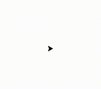

Now we are going to be working with turtles. Not the green animals with the shells, but a python module called Turtle.
Modules allow us to use cool features that are not part of python’s standard library. The Tutrle module will allow us to draw cool shapes on our screens.
We are going to be:
- Importing the Turtle module to draw on our screens
- Using if statements to conditionally execute code
- Using for loops to execute a piece of code a specific number of times
Turtle Time
2-1 Bringing up the Canvas
To begin, let’s just bring the turtle on to the screen. We make the turtle by assigning a variable t to the return of the turtle module’s Pen function.
t is a black arrow that starts off facing right on the canvas.
|
|
2-2 I like to move it, move it!
Now lets make the turtle move. We can do so using functions that are included in the turtle module. Specifically, the forward function moves t the specified number of pixels forward. So writing t.forward(50) will move our turtle 50 pixels in the direction that it is facing. The left() function will rotate the turtle by the specified number of degrees to the left. So writing t.left(90) will rotate our turtle to the left by 90 degrees.
|
|

2-3 Repetition using For loops
Making a square was pretty simple, but the code we used pretty repetitive. Four times, we had to tell the turtle to move forward, then turn left. So instead of listing off all of these commands repeatedly, we can use a for loop. A for loop tells a block of code to execute a certain number of times. In our case, we want to execute the move forward - turn left command 4 times. A for loop to execute something y number of times, looks like this:
|
|
So to make our square using a for loop, we can change our code to look like this:
|
|
2-4 If Statements
Sometimes we only want to execute code based on a certain condition. This is whre If Statement can be very useful. A basic If statement will check a condition, and if it is true, then it will execute the code in its code block. Lets try a simple example:
|
|
This code will not execute as is, but try changing the value we assigned to the age variable, to an age of 17 or higher!
2-5 Elif Statements
Elif statements are added after an If Statement and only execute when the preceding If-statement is false. Try out the following code to see how it works.
|
|
2-6 Else Statements
Else statements will execute when the preceding if statement and elif stements fails. It is the last condition checked in the If-Elif-Else chain. Try out the following code to see the use of Else statements. Change the age value to test out which stements are executed.
|
|
2-7 Using If-Elif-Else Statements to enhance our Turtle
If-Elif-Else statments can be used for far more than simply checking what you are legally allowed to do. We can use it to customize our turtle drawing! Lets go back to the code from lesson 2-3, where we use a for loop to make a square. Remember hoe we crafted our for loo to execute four times:
|
|
You might be wondering about the x in the for loop. this is called the iterator and for each execution of the loop, the iterator increases by 1. So in this case it starts at 0 and increases by 1 until it gets to 3. We can check the value of the iterator at each loop, to do something specific for each loop.
Specifically, I want to change the color of our turtle at each stage in the loop. We can use an If-Elif-Else statement to check the value of the iterator, and specify the color based on the value.
The first line of the square I want to be blue, the second line of the square I want to be yellow, the third line of the square I want to be red, and the fourth and final line of the square I want to be green.
Line 1 : Blue
Line 2 : Yellow
Line 3 : Red
Line 4 : Green
So I am going to modify the code from 2-3 to include an If-Elif-Else statment that specifies these colors based on the value of the iterator.
|
|